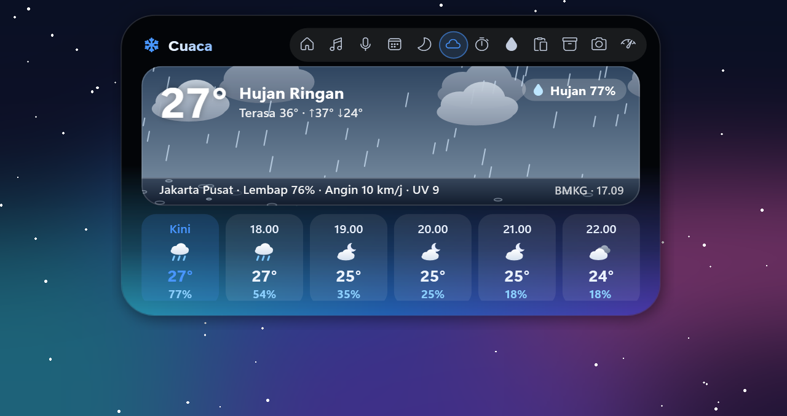
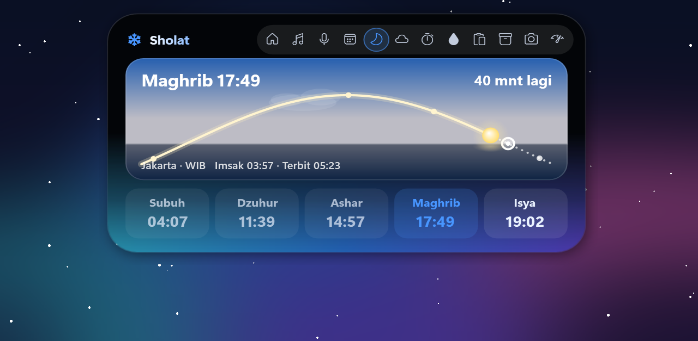
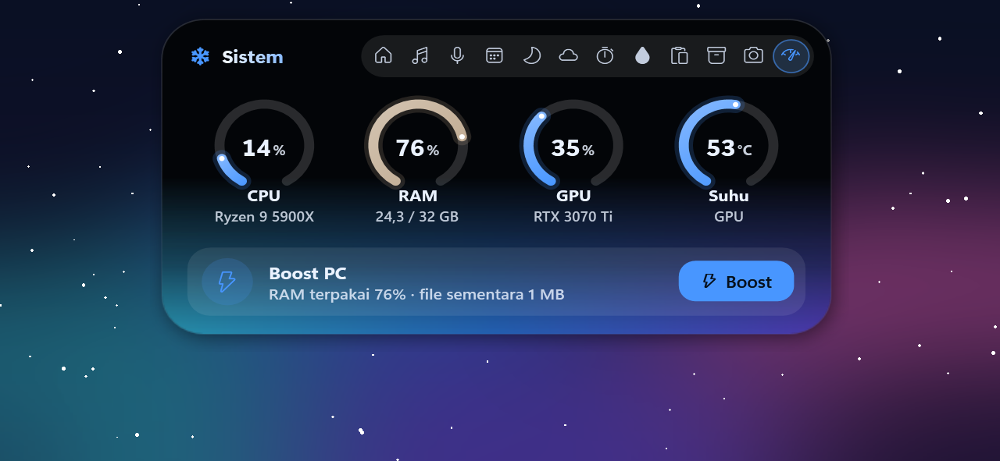
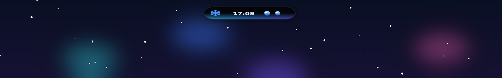

Semua yang kamu lirik, di satu tempat.
Arahkan kursor ke island untuk membukanya. Geser menjauh, ia menutup sendiri. Tidak ada yang perlu diatur.
Teman kecil yang tahu kapan harus santai.
Saat tidak ada apa-apa, jam bergeser dan sepasang mata muncul. Mereka melirik kursormu, berkedip, mengangguk mengikuti musik, mengantuk saat malam, dan senang saat kamu kembali. Coba gerakkan mouse-mu.
Dibuat dengan detail.
Langit yang ikut cuaca, busur matahari untuk jadwal sholat, cincin pemakaian PC, dan kartu notifikasi yang menampilkan pesan utuh.




Saking ringannya, kamu lupa ia ada.
DiNotch adalah aplikasi Windows asli, bukan browser tersembunyi. Ia hanya menggambar saat ada yang bergerak, lalu kembali diam.
Atur sesukamu.
Klik ikon salju di tray. Pilih mode Island, Notch, atau Robot, belasan skin bergradien, warna aksen, dan apa saja yang boleh mengingatkanmu.
Yang baru di DiNotch 1.0.4.
Waktu layar, pengingat tidur, bahasa Inggris, lirik karaoke untuk semua bahasa, dan semuanya sedikit lebih halus.
Siap menghidupkan layarmu?
Gratis. Tanpa akun. Pasang dalam semenit.
Unduh untuk Windows